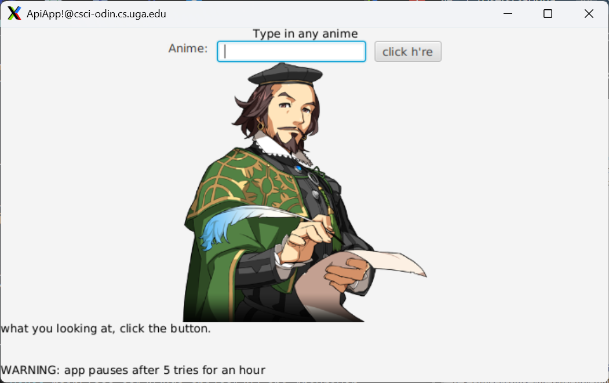
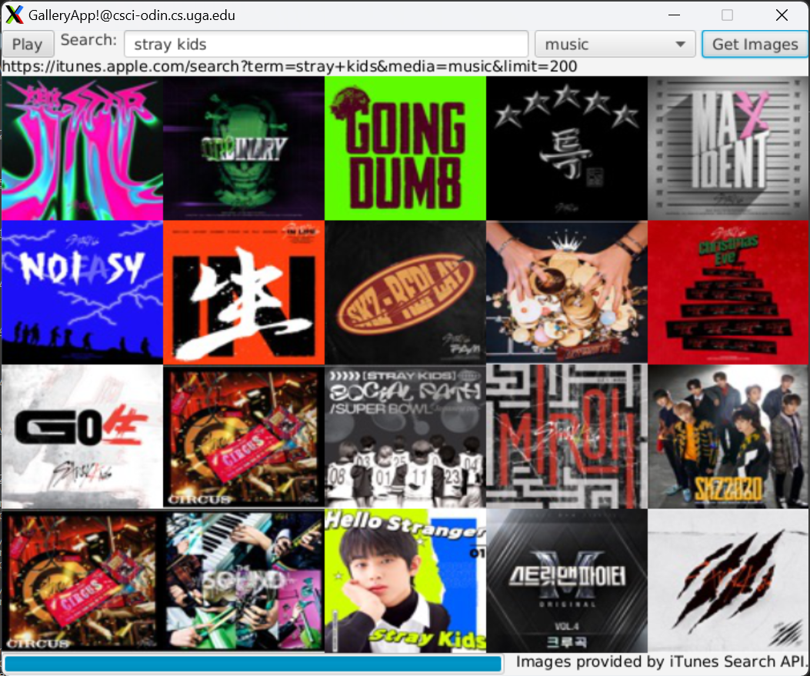

I'm currently a CS student studying pre-pharmacy at the University of Georgia. I'm passionate about health and technology, and I hope to use techoloigcal advancements to improve healthcare in the future.
A website for job seekers that assesses and reports on the financial health of a company as well as general information about personal experiences of employees.
Used Next.js
Shakespeare Translator App

Uses Shakespeare translator API and anime quotes API
It takes the input given by user, an anime name, and returns a random quote and its translation
Used JavaFX and Java
iTunes API App

Uses iTunes API and generates the first 20 images relating to searched item
A play/pause button is added to rotate between the library of photos